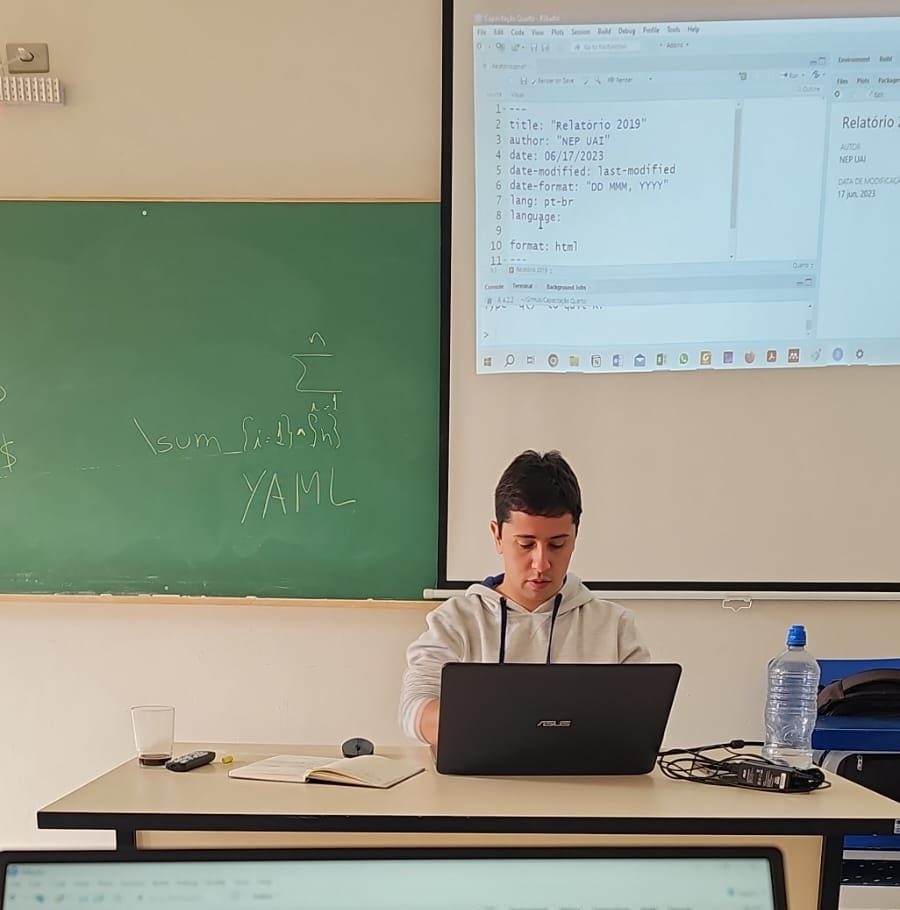

No dia 17/06/2023 conduzi uma capacitação em Quarto para o Núcleo de Estudos em Poluição Urbana e Agroindustrial (NEP UAI).

Mas o que é o Quarto?
É um software que permite, que em qualquer linguagem de programação, a criação de documentos (.docx, html, .pdf, dentre outros) a partir da combinação de texto, código e seu output (POSIT 2023; Allaire 2022).
Isso parece um pouco com o Rmarkdown…
E é! Só que melhor, pois combina a funcionalidade de R Markdown, bookdown, distill, xaringan, etc em um único sistema .
Onde posso procurar mais informações sobre Quarto?
Você pode acessar os meus arquivos da capacitação aqui. Além deles, separei alguns links interessantes para você:
A Quarto tip a day (Mine Çetinkaya-Rundel, estatística e co-criadora do Quarto)
Creating a blog with Quarto in 10 steps (Beatriz Milz, Curso R / R-Ladies São Paulo)
Créditos a imagem e vídeo do post: Marcelo Vieira-Filho.
Blog feito em Quarto, por Arthur Boari.